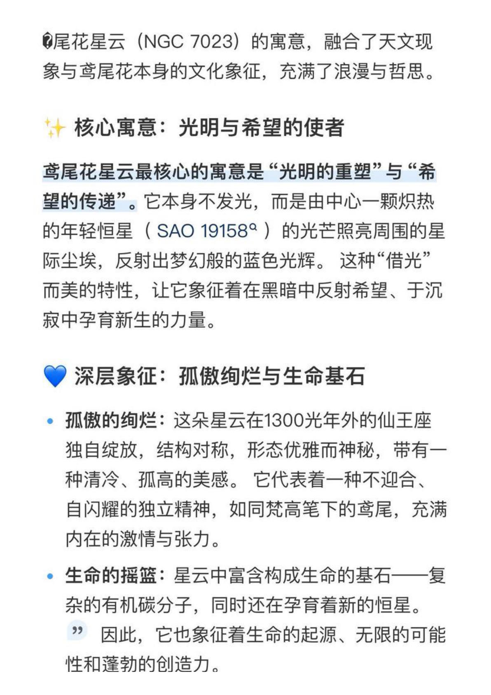

宇宙母题不是外加
名字里的“宇”、粉丝名“宇航员”、应援色“宇宙蓝”，已经构成稳定语义场。
Core Logic
NGC7023 是反射星云：星云自身不发光，而是接住中央恒星的光，反射出梦幻蓝色。肖宇梁与宇航员的关系也适合这样讲：他给出真诚、专业与陪伴，粉丝把这束光保存、扩散，再回到他身边。
名字里的“宇”、粉丝名“宇航员”、应援色“宇宙蓝”，已经构成稳定语义场。
鸢尾花星云的蓝色可转译为他的清冷气质与炽热内核之间的反差。
张起灵/打戏/眼神是出圈记忆，但预热应落到他本人“做自己”的真实。
酒酒把浩瀚概念落回日常陪伴，成为 Rainco&99 里最可触摸的情感符号。
适合讲“双向奔赴”：他说谢谢，宇航员也说谢谢；光从来不是单向抵达。
粉丝先看到角色的冷感，后来被本人真诚、好笑、较真的温度留住。
适合连接他的舞蹈、打戏、话剧、原声台词与持续训练。
一只被粉丝熟悉的小狗，让宏大企划有了可以被摸到的生活温度。
Shared Memory
这些素材更适合进入品牌预热正片：它们有粉丝共识、能和星云寓意咬合，也避开了争议语境。
NGC7023 与 1 月 23 日可做轻彩蛋，不宜做主论证。
粉丝名更名节点，强化“探月、星河、抵达”的叙事身份。
粉丝侧高频认知色，和鸢尾花星云的蓝色火焰天然相连。
直播、剪辑与“婆娑 cut”形成轻松温暖的陪伴记忆。
“十年之约，宇宙为证”可连接星光抵达需要时间。
酒酒不是装饰，而是本季情感关系的具象物。
蓝不是冷，蓝是更高温度的热。
这可以成为第二条预热的概念心脏：用 NGC7023 的“蓝色火焰”解释肖宇梁身上的清冷表象与炽热内核。
作为“被看见的起点”即可，不要把预热写成角色代餐或版本比较。
新浪采访与粉丝讨论都指向“角色是角色，你是你”的人剧分离表达。
粉丝对这类内容反应轻松亲昵，适合作为预热里的温暖落点。
粉丝最容易被“认真对待每一次见面”的细节打动。
语录可做候选，但正式海报级引用建议核对原始物料。
把他从“过去的出圈角色”带到“持续向前的演员”。
Preheat 02 Structure
整篇不要写成资料堆砌。建议从“蓝色火焰”进入，再依次证明：宇宙语言早已存在、清冷里有炽热、陪伴是彼此映照、酒酒让星云落回人间。
用 NGC7023 的反射星云与蓝色火焰建立主概念。
写“宇”、宇航员、宇宙蓝 #3F70AB、探月手册。
从角色记忆转向本人真实、真诚、做自己与专业热度。
十周年见面会、谢谢大家、伴手礼与粉丝回响。
把 Rainco&99 写成陪伴关系进入镜头，而非单纯可爱装饰。
Risk Boundary
第二条预热要让粉丝信服和被打动，关键是“稳”：不借争议煽情，不进入饭圈冲突，不把角色与本人混成一个人。
负面舆情、绯闻、健康旧事、公司/后援会管理争议都不进入正片。
张起灵只能作为入口，不做版本比较，不触发 CP/唯粉冲突。
反射星云可写“星尘、光路、回响、映照”，避免附属感。
可以写时间、等待与重新开始，不写具体谁对谁错。
“胖如猪、失宠”等只做内部理解，正片保留温暖陪伴。
粉丝整理语录可入候选池，品牌海报级 quote 需二次核原出处。
Sources
页面基于独立调研素材库整理，完整原始抓取与素材说明已随 HTML 一起保存在当前目录。

企划 PDF 第 4 页的核心寓意图：光明与希望、孤傲绝烂、生命基石等是第二条预热与肖宇梁人物线连接的关键。
.jpg){kind=link}